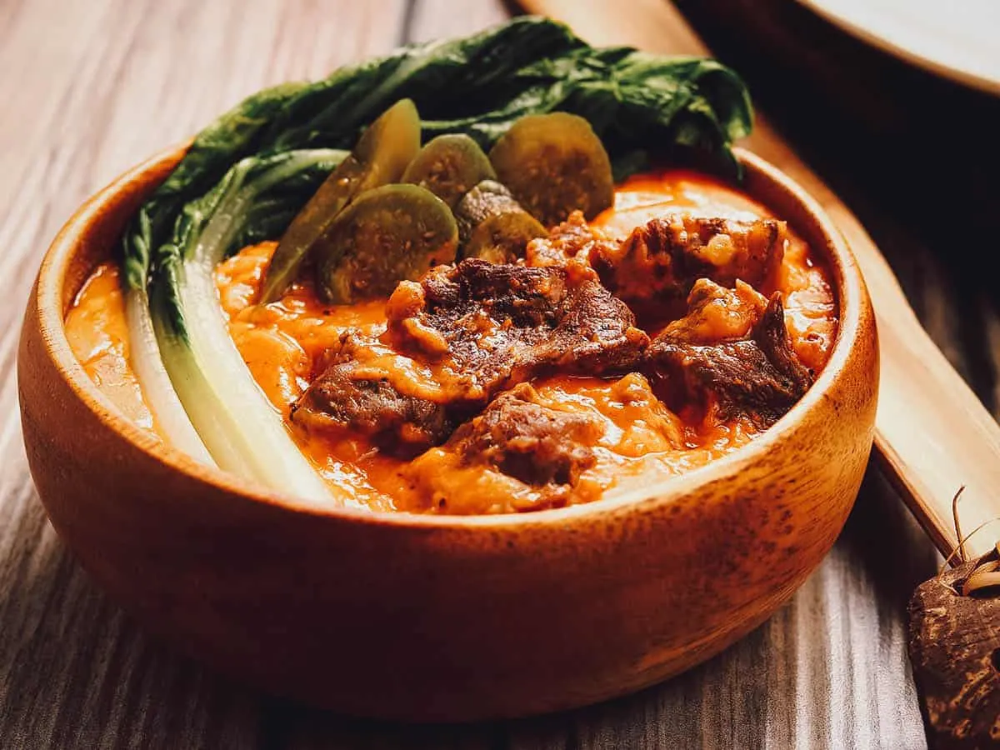

Kare Kare

Ingredients
- 2 pounds oxtail cut into serving size
- water
- 1 banana heart
- 2 large eggplant ends trimmed and cut into 1-inch thick
- 1 bundle long beans sitaw, cut into 3-inch lengths
- 1 bundle pechay ends trimmed and leaves separated
- ¼ cup rice flour
- 1-½ tablespoons annatto powder
- 1-½ cups chunky peanut butter
- 1 tablespoon oil
- 1 medium onion peeled and sliced thinly
- 4 to 5 cloves garlic peeled and minced
- 2 tablespoons fish sauce
- salt and pepper to taste
- shrimp paste
Instruction
- Rinse oxtail under cold, running water and with a knife, trim excess fat. In a deep pot, place oxtails and enough water to cover. Over medium heat, bring to a boil, skimming any scum that accumulates to top. Lower heat, cover and simmer, adding more water as needed to maintain 6 cups, for about 2 to 3 hours or until oxtails are easily pierced with a fork. Drain oxtail, reserving about 6 cups broth.
- Peel and discard the outer, fibrous skin layers of banana heart until you reach the lighter, softer core. Trim off stem and discard. Cut banana core into half and into fourths. In a bowl of cold salted water, place cut banana and soak for about 15 to 20 minutes. Using hands, squeeze to release bitter sap. Rinse with cold water and drain well, discarding liquid.
- In a pot over medium heat, bring about 4 cups water to a boil. Add banana heart and blanch for about 1 minute. With a slotted spoon, remove from liquid and set aside. Add eggplant and blanch for about 1 minute. With a slotted spoon, remove from liquid and set aside. Add long beans and blanch for about 1 minute. With a slotted spoon, remove from liquid and set aside. Add pechay and blanch for about 30 seconds. With a slotted spoon, remove from liquid and set aside.
- In a skillet over medium heat, add rice flour and cook, stirring occasionally, until lightly browned and toasted. In a bowl, combine toasted rice flour and ¼ cup reserved broth and whisk until smooth.
- In a small bowl, combine annatto powder and ¼ cup reserved broth. Stir until powder is dissolved and color has dispersed.
- In a bowl, combine peanut butter and ½ cup of reserved broth and stir until well-blended.
- In a large pot over medium heat, heat oil. Add onions and garlic and cook until limp and aromatic. Add oxtail and cook, stirring occasionally, until lightly browned. Add fish sauce and cook for about 2 to 3 minutes.
- Add the remaining 5 cups of reserved broth and bring to a simmer. Add annatto water, rice flour mixture and peanut butter mixture, stirring well to combine. Season with salt and pepper to taste. Continue to simmer for about 10 minutes or until it begins to slightly thicken. Add blanched vegetables and cook for about 2 to 3 minutes or until heated through and tender yet crisp. Serve hot with shrimp paste on the side.